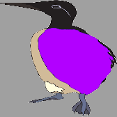
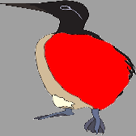

Death and the Egg
One of the troubling aspects of Darwinism is that it seems to imply that all biological organisms (humans included) are instinctively selfish. Self-sacrificing traits do not confer adaptive advantage (i.e., enhanced reproductive success) to the individuals who possess them. On the contrary, self-serving behavior does tend to improve reproductive success. Therefore we should expect to find no shortage of selfish traits among the extant members of a given species, and we ought to be surprised to find altruistic traits. However, we all know from everyday experience (and examples from nature such as the social insects) that individuals do often act in selfless ways for the benefit of others. Does that mean that Darwinism is wrong?
Note: The videos in this article may not display correctly in Firefox. They should work in Chromium based browsers (e.g., Chrome, Brave).
The Selfish Gene
In his 1976 book The Selfish Gene, Richard Dawkins argues (drawing from literature by various figures including W. D. Hamilton and John Maynard Smith) that Darwinian reasoning applied at the right level of abstraction (the level of the gene) actually does predict the evolution of altruism. The key idea is to take a “gene’s eye view” of natural selection. That is, we should not think of the fitness of individuals (I use the term “individual” here to mean the body of an organism), but rather the fitness of particular genes. A gene that induces self-sacrificing behavior of the “survival machine” it occupies can successfully propagate through the gene pool if that behavior is sufficiently profitable to other survival machines carrying copies of the same gene. Thus even a Darwinist should expect to find certain kinds of altruism between individuals in nature (see, e.g., kin selection). It isn’t the individuals who are necessarily selfish – it’s the genes.
Group Selection
Another possible explanation for the evolution of altruism goes by the name “group selection”. Group selection is the idea that natural selection may act at the level of groups (e.g., races or species) to optimize for individual characteristics that serve “for the good of the group”. For example, it might be said that the female honeybee (who dies a gruesome death after using her stinger) sacrifices herself for the good of the colony, or that male chimpanzees submit to a dominant male for the sake of peace within the group rather than fighting to the death for the right to mate.
Dawkins spills a fair amount of ink arguing that group selection is not the right way to think about evolution (and from what I understand he is far from being alone on this issue). He insists that natural selection must be understood at the level of the gene and not at the level of individuals nor groups of related individuals. The definition of “gene” is somewhat vague, and may actually include coalitions or working groups of distinct protein-coding DNA sequences, but that’s beside the point. According to Dawkins, natural selection properly understood means “survival of the fittest genes”, not “survival of the fittest individuals” or “survival of the fittest groups”.
Guillemots
An interesting counterexample against the idea of group selection arises from the brooding behavior of guillemots (a type of auk perhaps best known for the daring feats of their chicks). Guillemots lay eggs in dense communal colonies. They don’t make much for nests, so their eggs tend to roll around a bit. Every egg is decorated by a unique pattern of shapes and colors that its parents use to tell it apart from other eggs. Parents incubate their own eggs and ignore others. That is, they follow a selfish brooding strategy by selectively caring only for their own offspring.
{kind=link}
Why should guillemots go through so much trouble to be selfish? The selfish strategy requires the support of a fairly advanced complex of adaptations including the formation of intricate egg markings and the visual acuity and cognitive ability needed to recognize them. It may even induce additional costs in terms of energy use. A simpler (and more altruistic) strategy would be to not discriminate between eggs at all and to incubate whatever eggs are lying around. The downside to the altruistic strategy would be negligible as long as most of the other guillemots are also doing it. From a group-selectionist point of view we might expect the altruistic strategy to dominate since selfishness doesn’t benefit the species as a whole and is perhaps even moderately harmful.
We can investigate by simulating natural selection of brooding strategies in a population of guillemots. We’ll implement the simulation in bevy, a game engine for Rust. My previous post gives a brief introduction to bevy, but it isn’t really necessary for understanding the present article. The code is available here.
The simulation is based on the basic Darwinian principles of 1) random hereditary mutations and 2) differential reproductive outcomes due to those mutations. We’ll begin by looking at three basic types of brooding strategies modelled in the simulation.
The Altruist

The altruist wanders around aimlessly, occasionally laying an egg. After laying an egg, she continues to wander and may continue to lay more eggs. Whenever her path happens to cross with an egg she always (whether it is her egg or not) sit and incubates the egg until it hatches into a new guillemot.
A population of altruists is able to thrive quite well by indiscriminately tending to one another’s eggs:
There is always the chance that an egg expires before anyone gets to it (a small chance however when the population is sufficiently large), but that is equally likely to occur for all members of the group, so no one guillemot has any reproductive advantage over the others (at least not due to brooding strategy).
The Selfish

The selfish guillemot wanders like the altruist, but whenever she lays an egg she immediately incubates the egg until it hatches. We will assume that there is an inherent cost for adopting the selfish strategy, perhaps due to some genetic tradeoff for the required adaptations (e.g., egg markings and visual acuity), or perhaps due to the additional stress of worrying about one’s own egg, or whatever else it might be. We’ll model the cost of selfishness in our simulation as a 1.3x multiplier on the rate of aging, causing selfish guillemots to have significantly shorter lifespans on average than their altruistic cousins.
Altruistic and selfish guillemots can coexist peacefully in a brooding community provided that the altruists are numerous enough to support their own subset of the population:
Selfishness is a reliable way of ensuring the survival of one’s own offspring, but altruism seems to be the better strategy overall due to the longer average lifespan of altruists. All seems well – what could possibly go wrong?
The Cheat

The cheat wanders and lays eggs exactly like an altruist, but she never actually incubates any eggs that she encounters. She simply continues to lay eggs for her entire life, relying solely on the generosity of altruists for incubating them. It’s important to note that the cheat isn’t necessarily aware of fact that she is “cheating”. She just happens to have stumbled upon an unconscious strategy (presumably due to some genetic mutation) that performs well in an environment rich with altruism. Moreover, there is little cost for adopting the cheater strategy because, unlike selfishness, it doesn’t require any special adaptations. The cheat could just be an altruist who has “forgotten” how to incubate.
A population containing only altruists and cheats tends to balance out at an optimal ratio of approximately 1:1 altruists to cheats:
But something interesting happens when selfishness is introduced into the mix. This is what we will investigate with the simulation. But first, let’s see how the simulation models genes and reproduction.
The Genes
Every guillemot carries a set of “genes” that influences their choice of brooding strategy. We model these genes as a probability distribution over the three strategies, encoded as a three-dimensional vector of floats that sum to 1:
struct Genes(Vec3);A guillemot’s strategy is fixed at birth (when it hatches from its
egg) by drawing a Strategy from the probability distribution
determined by its genes.
enum Strategy {
Altruistic,
Selfish,
Cheat
}
fn hatch(Genes(genes): &Genes, rng: &mut ThreadRng) -> Strategy {
let p: f32 = rng.gen();
if p <= genes.x {
Strategy::Altruistic
} else if p <= genes.x + genes.y {
Strategy::Selfish
} else {
Strategy::Cheat
}
}In the real world, a guillemot chick inherits a mixture of the genes of its two parents. We instead use a simplified model of reproduction where a single parent endows her eggs with slightly mutated copies of her own genes (thereby sidestepping issues like blending inheritance). Genes are mutated by applying a small additive Gaussian noise to each gene component and then renormalizing to sum to 1:
fn mutate(Genes(genes): &Genes,
rng: &mut ThreadRng,
gauss: rand_distr::Normal<f32>) -> Genes {
let x = f32::max(0.0, genes.x + gauss.sample(rng));
let y = f32::max(0.0, genes.y + gauss.sample(rng));
let z = f32::max(0.0, genes.z + gauss.sample(rng));
Genes(Vec3::new(x, y, z) / (x + y + z))
}For this article we let gauss be a normal distribution centered at
0 with standard deviation 0.01.
The Simulation
The brooding area is a square grid of discrete locations. The simulation proceeds in discrete “ticks”, executing the following steps on every tick:
- For each guillemot,
- if currently incubating an egg, do nothing.
- Otherwise:
- Die with probability
DEATH_RATE * age(whereDEATH_RATEis a fixed constant, chosen as1/500in our examples). - Or, lay an egg in a randomly chosen adjacent location (if an
empty one is available) with probability
birth_rate(wherebirth_rateis not a fixed constant but is calculated based on the difference between the current population and the capacity of the environment, so that the birth rate is high when the current population is low and vice versa). If following the selfish strategy, move to the egg and begin incubating it immediately. - Or, choose a random adjacent location. If the location is empty, move to it. If the location contains an unattended egg and we are following the altruistic strategy, move to the egg and begin incubating.
- Die with probability
- For each egg,
- If
age >= EGG_EXPIRATIONand not being incubated, die (whereEGG_EXPIRATIONis a constant). - If being incubated and
age >= INCUBATION_PERIODthen hatch in a randomly chosen adjacent empty location (since the current location is already occupied by the incubating guillemot). If no such location exists, the newly hatched guillemot dies.
- If
Hatching when age >= INCUBATION_PERIOD is a minor
hack/simplification that is slightly unrealistic but doesn’t really
matter for our purposes (technically an egg could hatch after just a
few ticks of incubation if it was found by a guillemot right before it
would have expired). Note also that in our simulation guillemots can’t
die while incubating. This causes altruists to have longer lifespans
but overall the same lifetime number of eggs laid on average as
cheats.
Stability
We should expect a strategy to dominate only if it is an evolutionarily stable strategy (ESS). A strategy is said to be an ESS when, given that the entire population has already adopted the strategy, no individual can improve their expected reproductive success by deviating from it. ESS’s are roughly analogous to Nash equilibria. Being an ESS is not sufficient to guarantee adoption by a given population, but it is necessary. That is, a strategy must be an ESS to have any chance of gaining widespread and lasting adoptance by any population under the effects of natural selection.
The selfish brooding strategy is an ESS. If the entire guillemot
population is selfish, no individual guillemot can benefit (in terms
of reproductive success) by switching to a different strategy. This is
because altruism and cheating are only viable when many altruists
already exist. We can confirm that selfishness is an ESS by simulating
a purely selfish population of guillemots (setting their genes to give
probability 1 to the selfish strategy), and increasing the scale and
speed of the simulation:
We see an altruist or cheat pop up here and there due to random mutations, but selfishness persists as the dominant strategy for the vast majority.
Cheating, on the other hand, is not an ESS. In a population full of cheaters an individual guillemot’s expected reproductive reward is nil. It can do better by switching to either altruism (where it will have at least some chance to incubate its own egg) or selfishness. Realistically, though, a population of cheaters would probably go extinct before having the chance to adapt to other strategies.
What about altruism? Is it an ESS? Let’s suppose for a moment that the mutations for selfishness are not available, so that the only possible strategies are altruism and cheating. We can disable selfishness and start the simulation with a population of pure altruists (and speed up the simulation even more):
We see that it eventually converges to a stable equilibrium with a
ratio of approximately 1:1 altruists to cheats. It may in principle be
possible for the population to be divided into two separate families,
one purely altruistic and the other purely cheaters. But what’s really
happening in our simulation is convergence to a stable gene
configuration that assigns 1/2 probability to altruism and 1/2
probability to cheating. From the genes’ point of view, the “strategy”
is actually a probability distribution over Strategys (i.e., a mixed
strategy). The ESS here is a mixed strategy between altruism and
cheating. And when we said earlier that selfishness is an ESS, what we
really meant is that the gene configuration that assigns probability
1 to the selfish Strategy is an ESS. It turns out that ESS’s
correspond not to pure nash equilibria but rather to mixed Nash
equilibria (where “mixed” means a probability distribution over a set
of possible “pure” strategies). The cool thing about mixed equilibria
is that, unlike pure equilibria, they always
exist,
and so too do ESS’s.
So what happens when we allow for selfishness? Let’s enable selfish mutations and restart the simulation, again with an initial population of pure altruists:
We should remember that the guillemots are not consciously deciding to become selfish. Rather, natural selection on generations builds into them an unconscious rule of thumb (together with the necessary physical adaptations) for following the evolutionarily stable strategy.